I am a dedicated IT Specialist with extensive experience in network management, troubleshooting, and systems administration. With a strong background in network infrastructure, I am skilled at designing, implementing, and maintaining robust network solutions to support business operations.
Throughout my career, I have acquired significant expertise in areas such as:
I graduated from Bulacan Polytechnic College in 2019, My Degree is Bachelor of Science in Information System. What my studies are Networking, Programming and Computer Analysis.
My professional journey includes roles in Network, where I led critical projects involving network upgrades and security enhancements. I hold several industry-recognized certifications, including short courses at UDEMY and Cisco Skill, which validate my skills and commitment to continuous learning.
Outside of work, I enjoy playing games and watching new technologies. I am passionate about staying updated with the latest trends in network technologies and exploring innovative solutions to complex network challenges.
 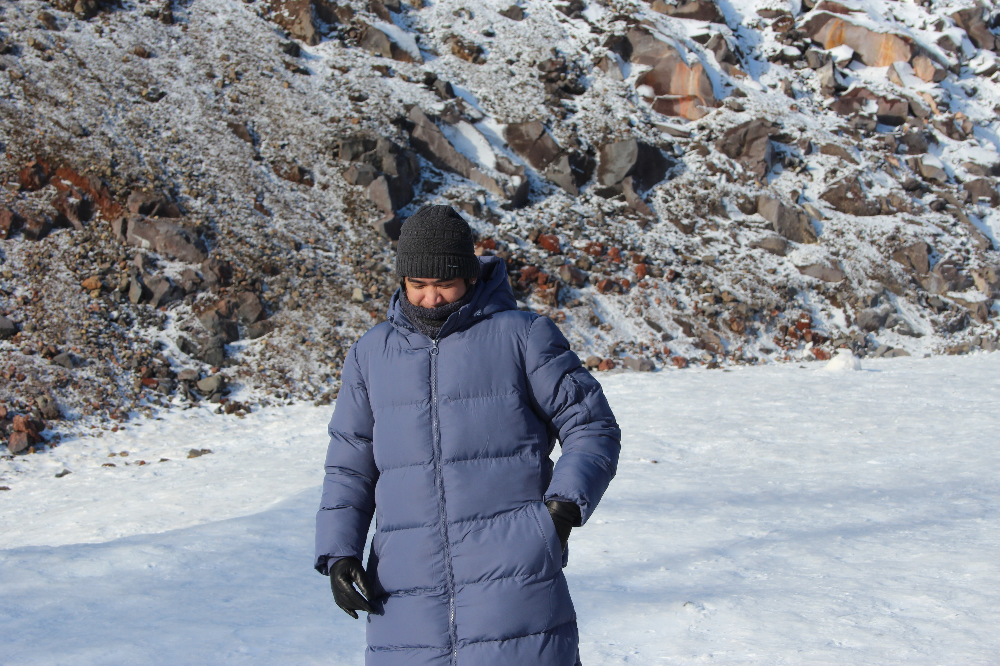
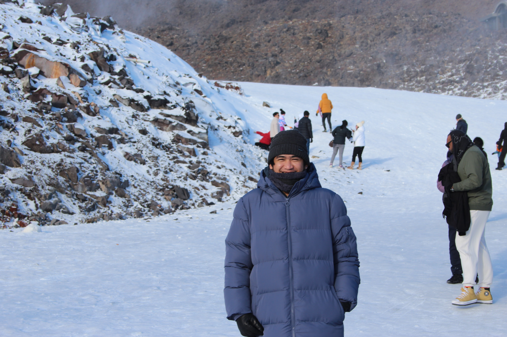
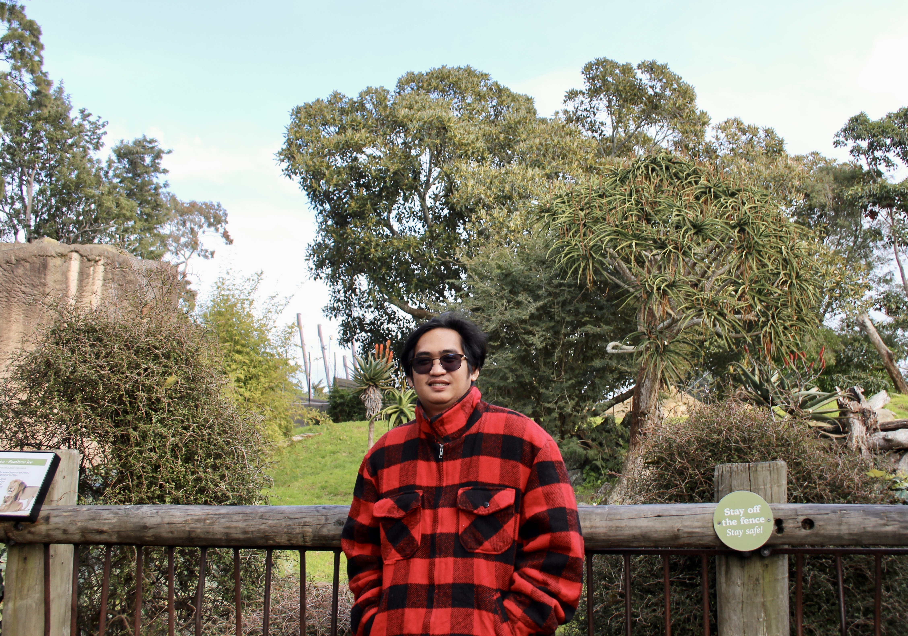
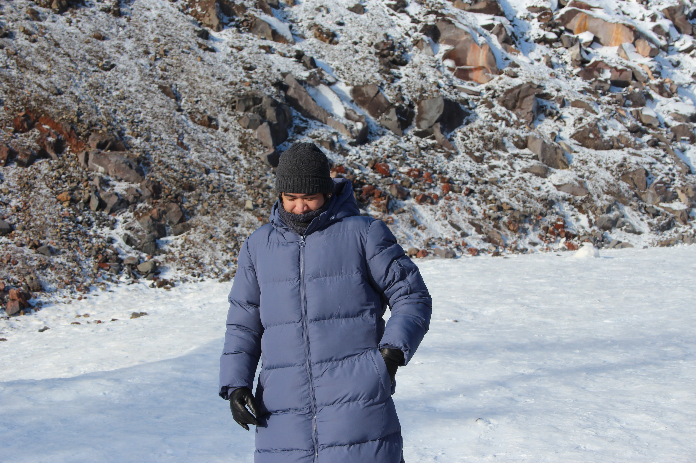
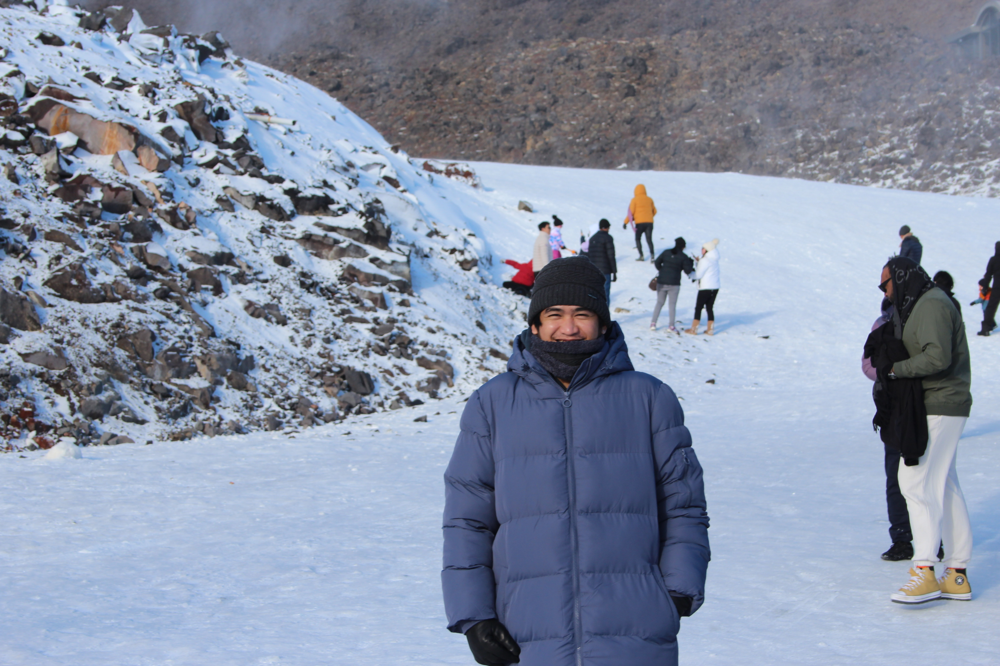
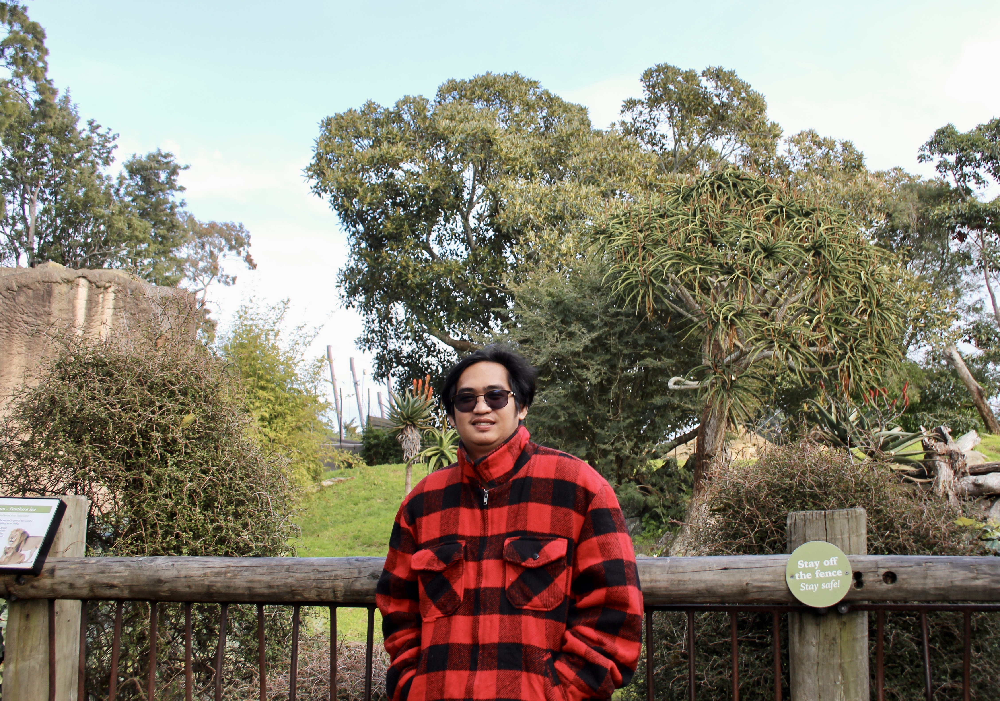
 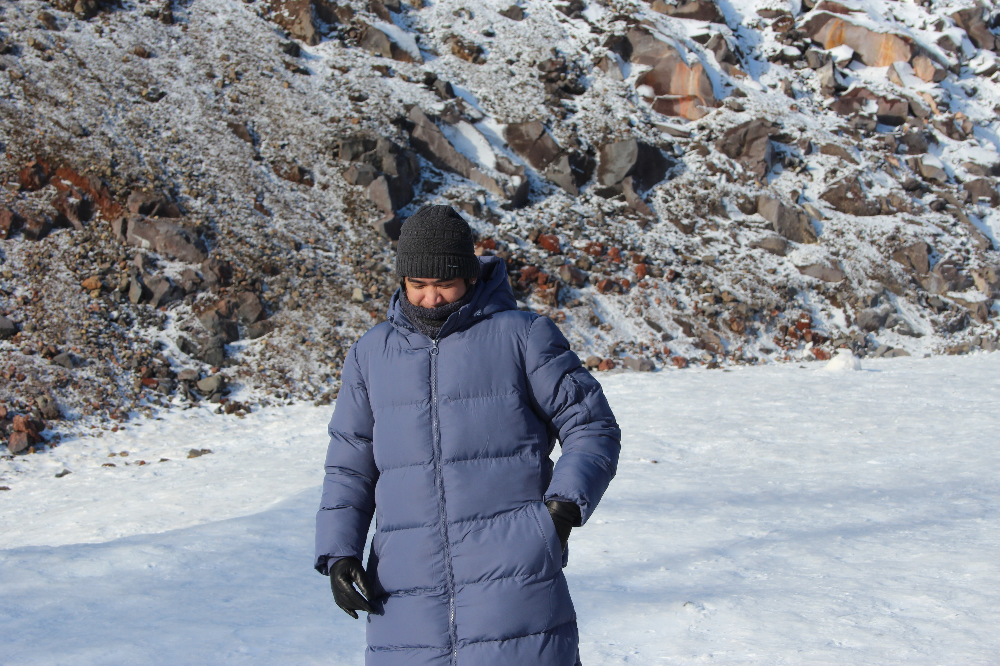
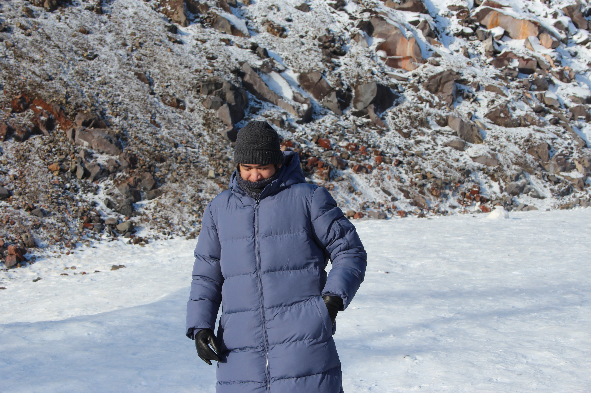
 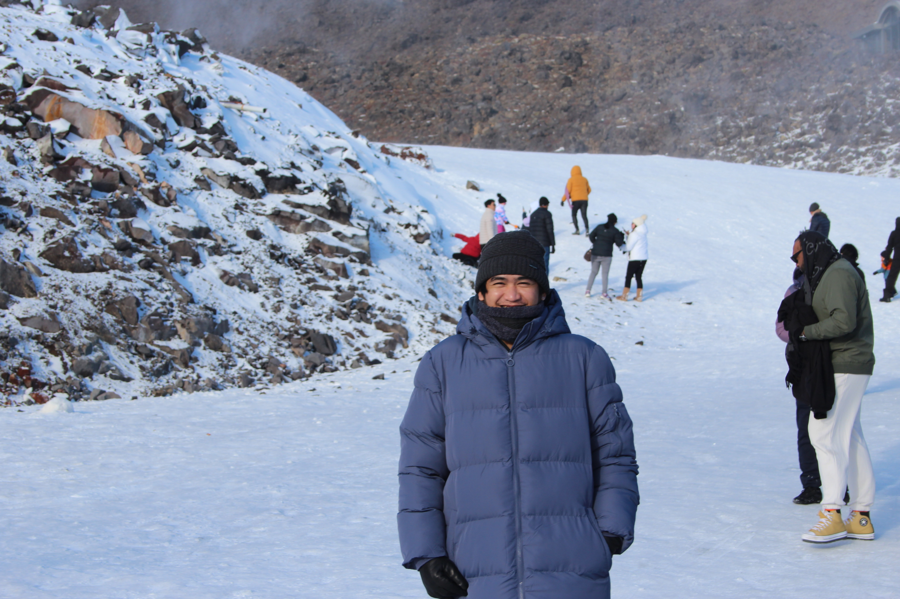
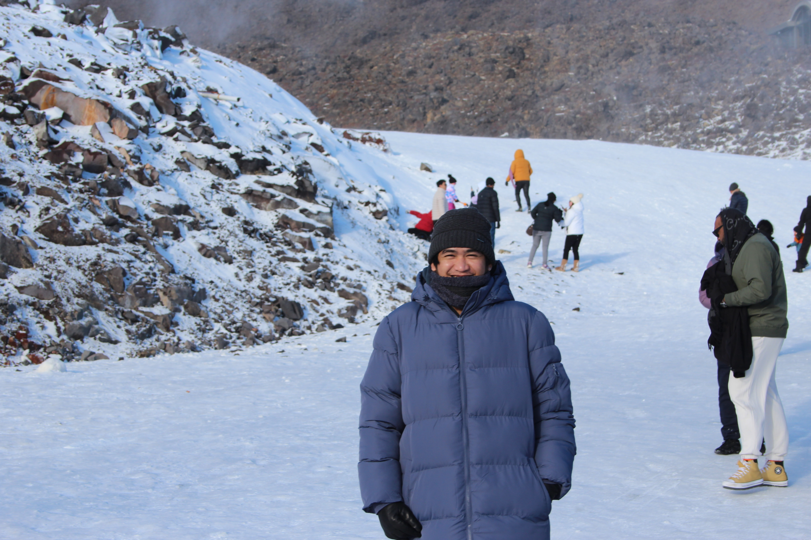
 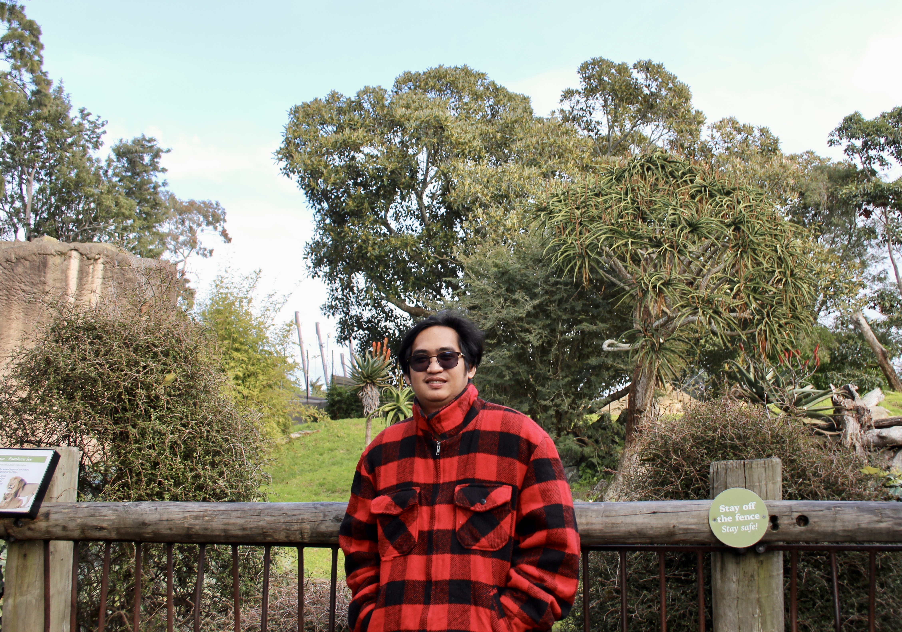
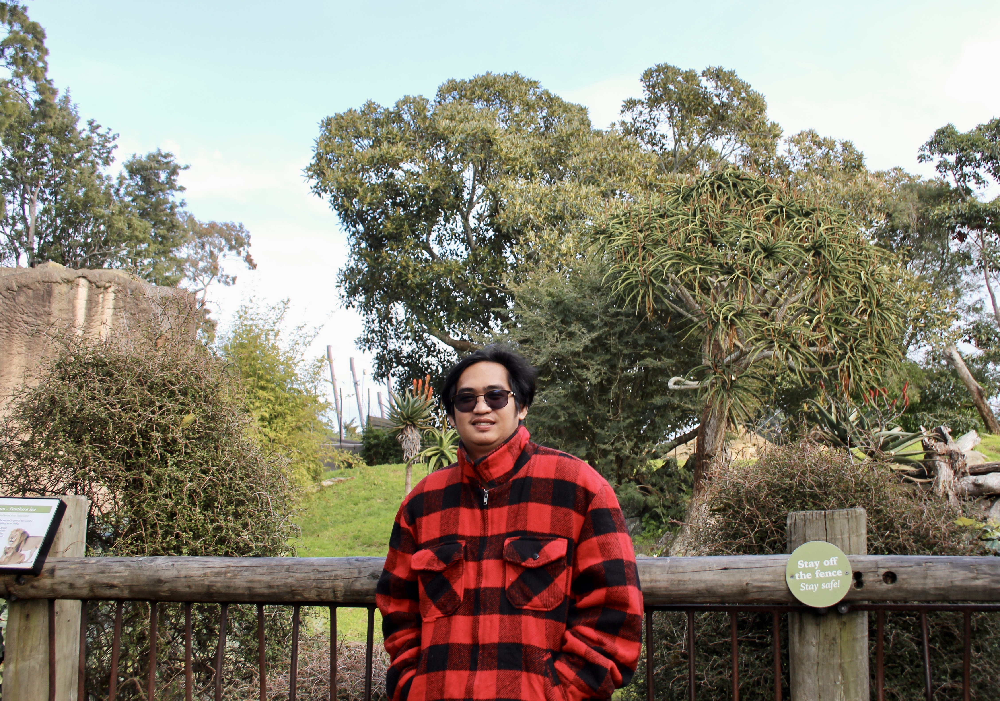